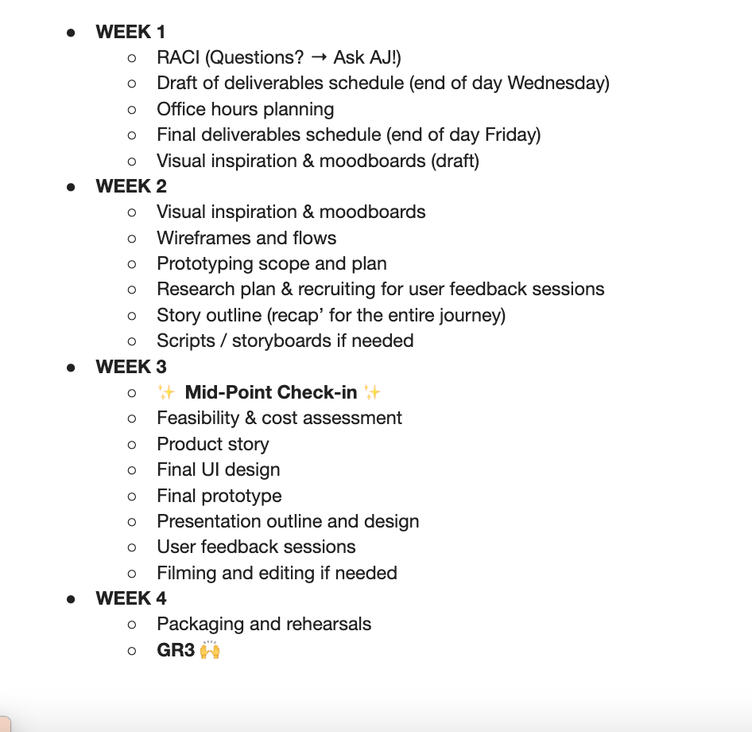
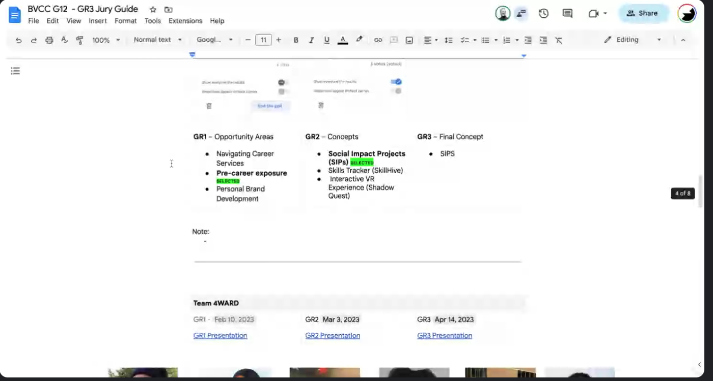
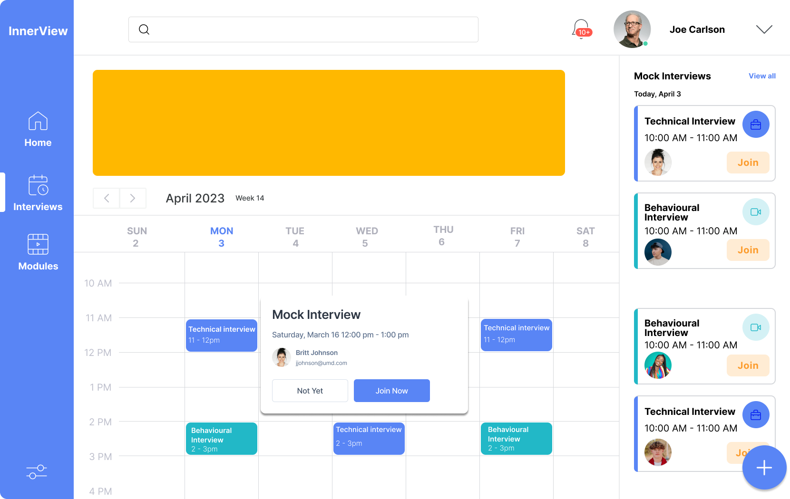
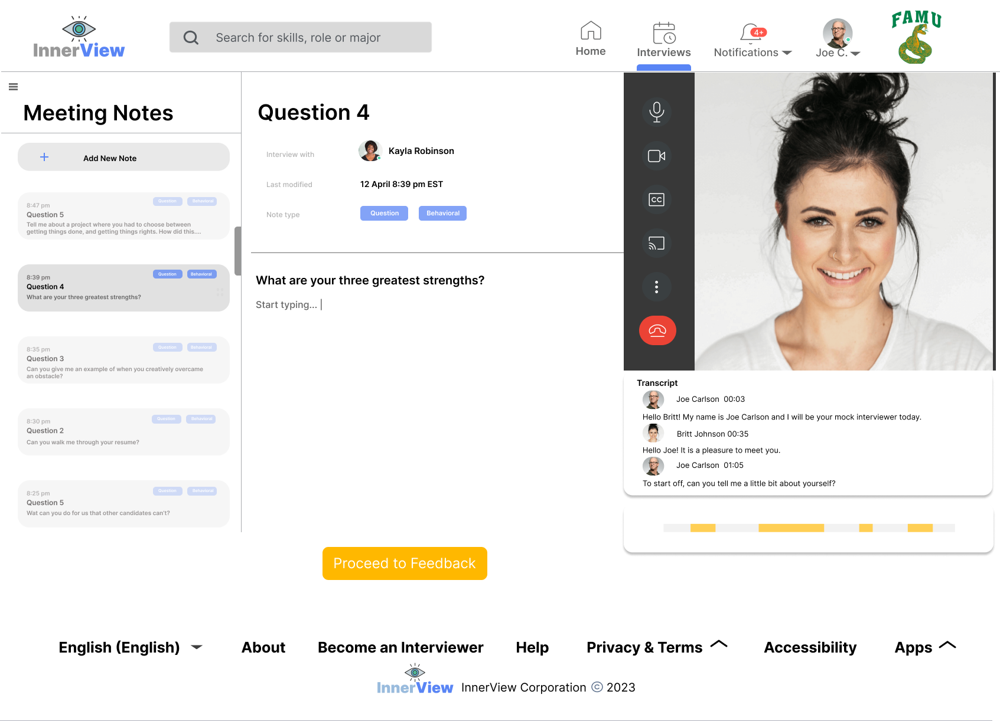
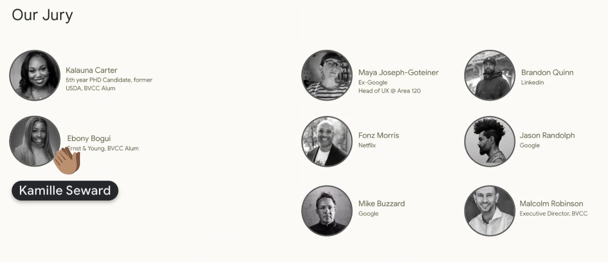

InnerView
Role Context
Supporting underrepresented demographic as they navigate venture capital through an extended design sprint --> increasing diversity in the VC and startup ecosystem
Business Problem
students gain work experience + exposure to opportunities → address the wealth gap
User Problem + Problem Scope
How can the 33% of college students who are first generation feel supported and guided through their professional pursuits?
Sprint Support
I divided my responsibility into two categories. The first, provide guidance and direction that would keep the team progressing against the rapid timelines.

The second was to provide critique and industry knowledge that would challenge their product and add value within the market.

Feature Prioritization
Live One-On-One Mock Interviews: InnerView facilitated live, one-on-one mock interviews to help students practice and refine their interviewing skills. This feature allowed students to gain confidence and readiness for real job interviews.

Asynchronous Mock Interviews: In addition to live sessions, InnerView also provided asynchronous mock interviews, allowing students to practice at their own pace and convenience.

Conclusion
My role was to provide guidance as the technology team navigated the design sprint for their product - from discovery to prototype - which I did over two weekly team meetings for planning and co-working as well as regular check-ins over Slack. While the team was not selected as a top project, the collaboration amongst the team stood out and was lauded by the jury.
